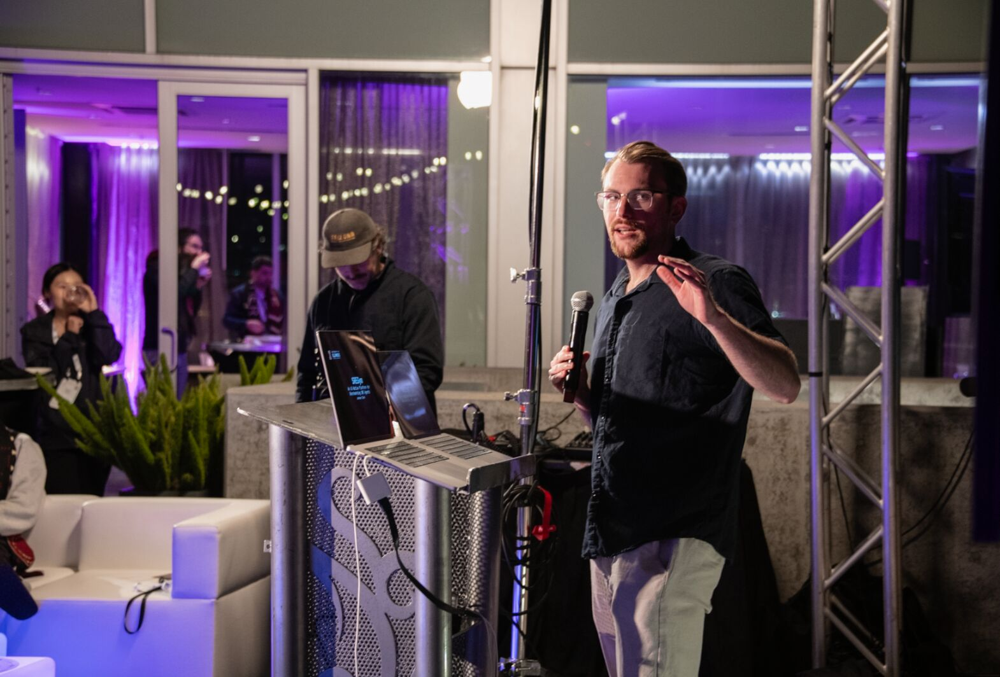

jclark58@illinois.edu

Google Scholar | OpenReview | DBLP | GitHub | LinkedIn | CV
I'm a second-year PhD student in the Siebel School of Computing and Data Science at the University of Illinois Urbana-Champaign
(UIUC). I am "watched" by my advisor Tianyin Xu.
I'm currently building SREGym to see if AI can resolve production incidents. SREGym is part of Laude Slingshots // TWO.
See my interview with Andy Konwinski and a brief demo.
My research explores practical AI and agent techniques for
safety-critical computer systems and infrastructures.
My current work is in the AIOps space, specifically in AI for Site Reliability Engineering (SRE).
Previously, I collaborated with Microsoft Research and IBM Research to build LLM benchmarks (AIOpsLab, ITBench)
and agents (STRATUS) for SRE.
In the past, I worked at NASA in the Space Technology Mission Directorate, where
I helped develop space systems for the International Space Station.
I'm also an instructor at the Discovery Partners Institute at the
University of Illinois, where I teach a professional development class on Data Science to CPS high school teachers.
@article{clark:arxiv:26,
author = {Jackson Clark and Yiming Su and Saad Mohammad Rafid Pial and Yifang Tian and Lily Gniedziejko and Hans-Arno Jacobsen and Yinfang Chen and Tianyin Xu},
title = {{SREGym: A Live Benchmark for AI SRE Agents with High-Fidelity Failure Scenarios}},
journal = {arXiv:2605.07161},
year = {2026},
month = may,
eprint = {2605.07161},
archivePrefix = {arXiv}
}
@inproceedings{chen2025stratus,
title = {{STRATUS}: A Multi-agent System for Autonomous Reliability Engineering of Modern Clouds},
author = {Chen, Yinfang and Pan, Jiaqi and Clark, Jackson and Su, Yiming and Zheutlin, Noah
and Bhavya, Bhavya and Arora, Rohan and Deng, Yu and Jha, Saurabh and Xu, Tianyin},
booktitle = {Advances in Neural Information Processing Systems (NeurIPS)},
year = {2025},
eprint = {2506.02009},
archivePrefix = {arXiv},
primaryClass = {cs.DC}
}
Selected for Oral Presentation (Top 1%), Spotlight Poster
@inproceedings{jha2025itbench,
title = {{ITBench}: Evaluating {AI} Agents across Diverse Real-World {IT} Automation Tasks},
author = {Jha, Saurabh and Arora, Rohan and Watanabe, Yuji and Yanagawa, Takumi
and Chen, Yinfang and Clark, Jackson and others},
booktitle = {Proceedings of the 42nd International Conference on Machine Learning (ICML)},
year = {2025},
address = {Vancouver, Canada},
note = {Oral Presentation (Top 1\%)}
}
I have been giving many tutorials on AIOps and SRE agent research.